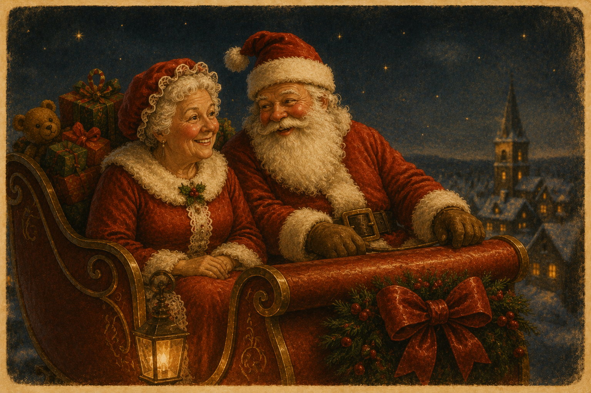
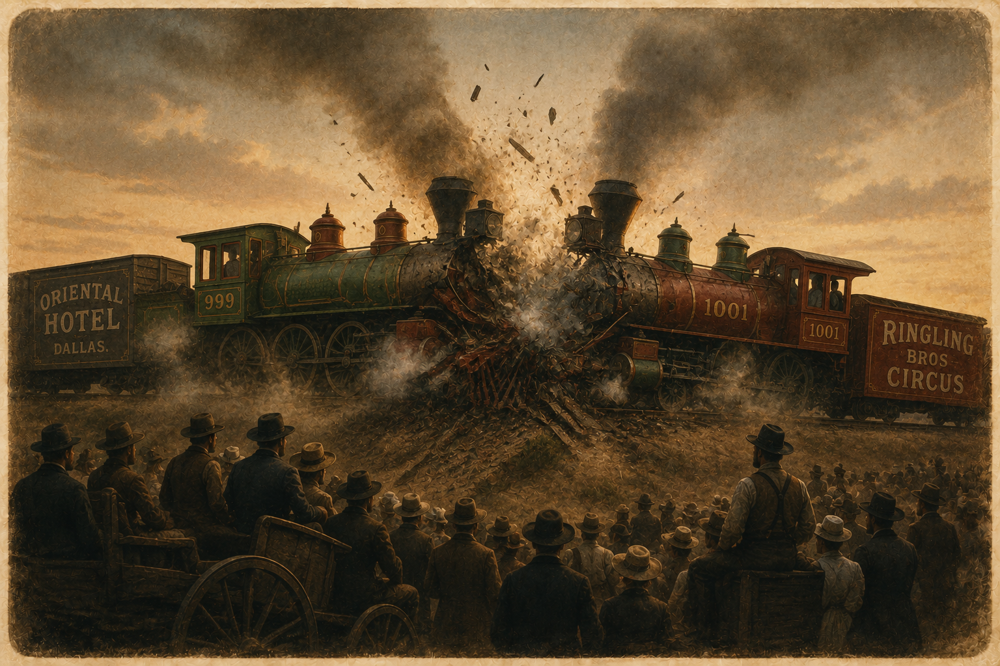
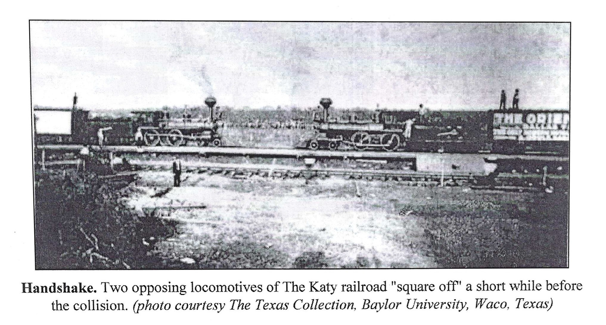

Why Granny Can’t Skip
A heartfelt memoir
A collection of reflections that finds humor, wisdom, and grace in everyday life—from childhood memories and family stories to the surprises of growing older.
Books & Writing
Whether drawn from real life or imagined worlds, these are stories about people, places, and the moments that stay with us.
Two books. Two different journeys. One storyteller.
A heartfelt memoir
A collection of reflections that finds humor, wisdom, and grace in everyday life—from childhood memories and family stories to the surprises of growing older.

A historical mystery
Set against the backdrop of 1960s Austin, this mystery blends friendship, history, and intrigue during one of the most transformative eras in Texas.
From Karen’s Desk
Essays, Short Stories & Poetry
Finished pieces drawn from history, imagination, memory, and the small moments that stay with us.

A heartwarming Christmas tale reminding us that the greatest gifts aren't things—they're the moments we share with the people we love.
Read Story
The remarkable true story of a planned train collision that drew thousands of spectators—and became one of the most infamous disasters in Texas history.
Read EssayA poem
A reflection on changing seasons, the passage of time, fading fertility, and the beauty found in letting go.
Read PoemFrom My Notebook
Short, informal reflections on where an idea began and why a particular story felt worth telling.

Karen reflects on discovering one of Texas’s strangest historical events and why she wanted to bring it back to life for modern readers.
Read Reflection
A personal look at the memories, history, and questions that led Karen back to 1960s Austin and inspired her mystery novel.
Read ReflectionA lifelong habit of noticing, remembering, and turning moments into meaning.
The world around me and the people in it.
Moments that leave a mark.
What if? What happened next?
Putting words to the story.
Shaping and refining.
Stories are meant to be read.
A Favorite Passage
Read moreWe don’t really grow older, do we? We just collect more stories. Some make us laugh until we cry. Some make us shake our heads. And some—the ones we thought we’d forgotten—come back when we least expect them and remind us who we’ve been.
Read moreAustin in the sixties was a city on the edge of something big. You could feel it in the air, in the arguments, in the music coming through open windows. That was the summer everything changed for me.

Read moreSmall acts of kindness are easy to give and don’t take much time or money, but they can make a big difference in a person’s—or even a turtle’s—life.